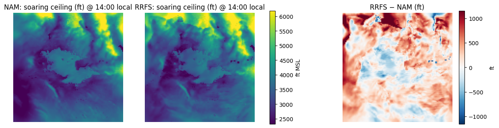
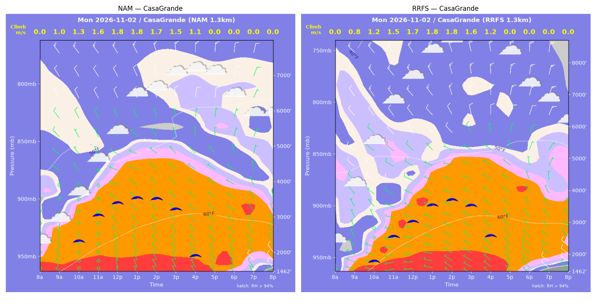
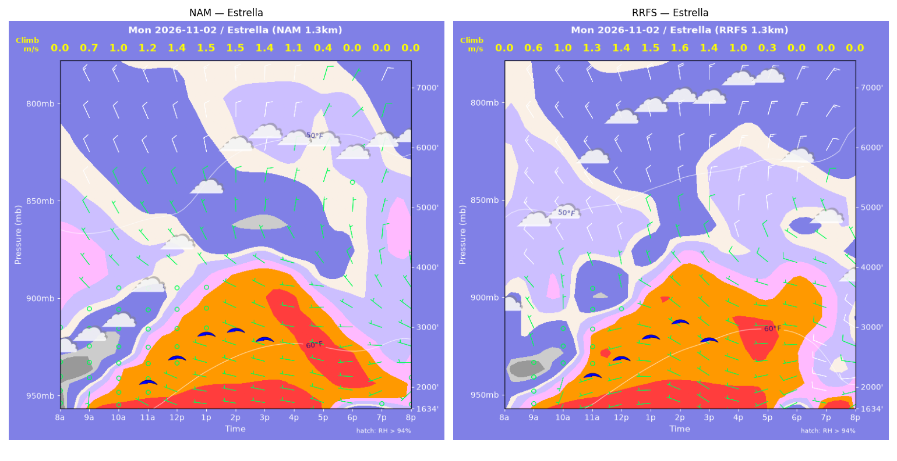
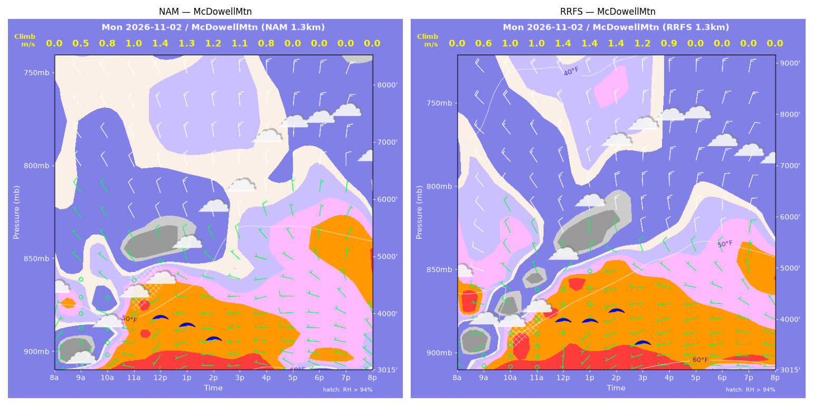
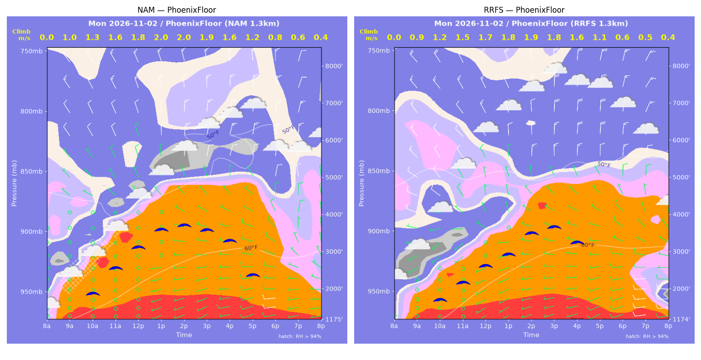
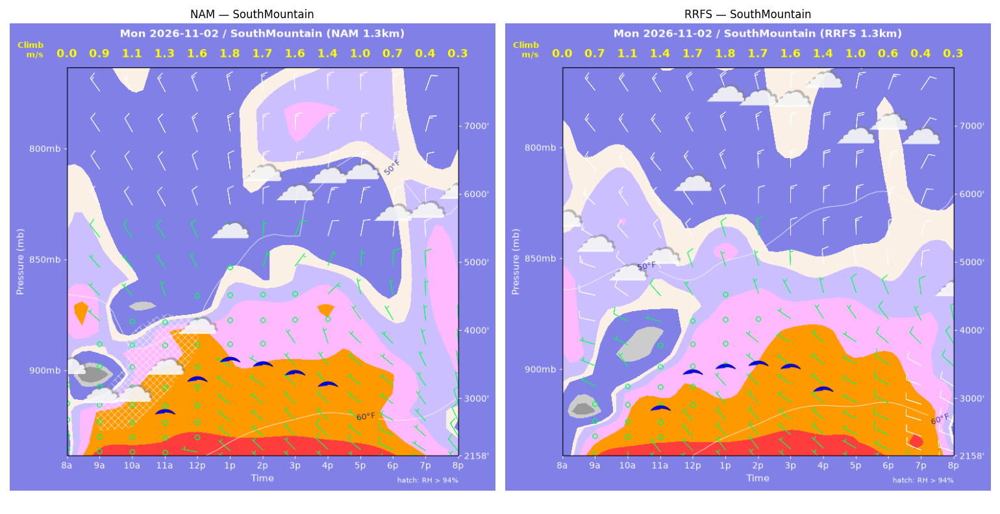
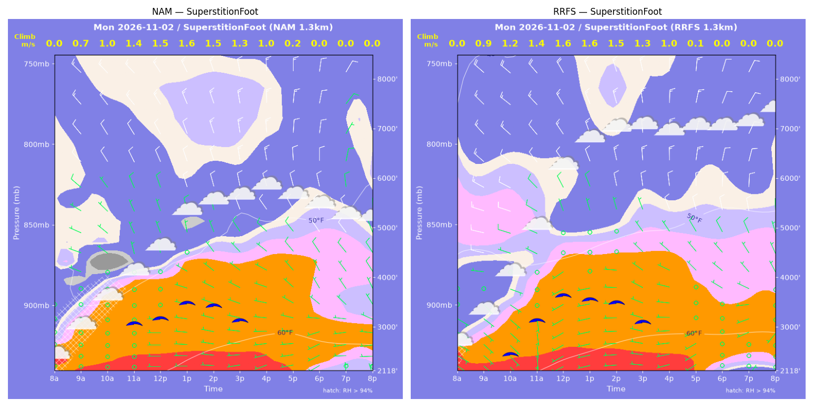
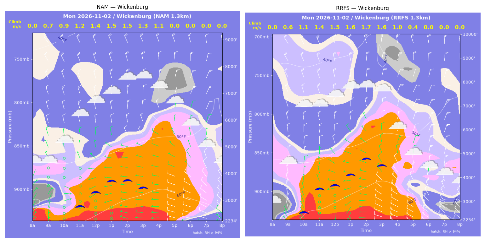

../runs/ab-phoenix-nam — model nam, cycle 2026-11-01 18z, dx 1.3333333740234374 km, 13 hours, grid 114×114../runs/ab-phoenix-rrfs — model rrfs, cycle 2026-11-01 18z, dx 1.3333333740234374 km, 13 hours, grid 114×114Grids identical; afternoon = 12:00–17:59 local (UTC-7). Δ = RRFS − NAM.
| Site | terrain ft | BL top (AGL) med|Δ| / bias (ft) | w* med|Δ| / bias (fpm) | Soaring ceiling med|Δ| / bias (ft) | BL wind speed med|Δ| / bias (kt) | BL wind dir med|Δ| / bias (deg) | 2 m temperature med|Δ| / bias (F) | Sfc LCL (AGL) med|Δ| / bias (ft) | Sensible heat flux med|Δ| / bias (W/m2) |
|---|---|---|---|---|---|---|---|---|---|
| PhoenixFloor | 1175 | 477 / -412 | 19 / -21 | 356 / -429 | 2 / +1 | 14 / -3 | 0 / +0 | 1506 / +1313 | 11 / -7 |
| SouthMountain | 2159 | 36 / +1 | 9 / -2 | 80 / -9 | 1 / +1 | 39 / -39 | 1 / +0 | 1346 / +1380 | 12 / +0 |
| SuperstitionFoot | 2118 | 153 / +349 | 8 / -4 | 41 / +89 | 3 / -1 | 11 / +5 | 0 / +1 | 1416 / +1387 | 15 / -12 |
| Estrella | 1634 | 115 / -17 | 3 / -1 | 18 / +4 | 3 / +3 | 8 / +7 | 1 / +1 | 996 / +1118 | 9 / +7 |
| Wickenburg | 2235 | 1181 / -7 | 36 / +35 | 369 / +456 | 3 / +3 | 12 / +7 | 3 / +2 | 703 / -202 | 21 / +20 |
| CasaGrande | 1463 | 395 / +180 | 11 / +4 | 233 / +124 | 2 / +2 | 21 / -25 | 1 / +1 | 1818 / +1750 | 3 / +4 |
| McDowellMtn | 3015 | 490 / +230 | 17 / +16 | 94 / +224 | 2 / -1 | 40 / +35 | 1 / +1 | 934 / +1032 | 7 / +6 |
| Metric | n | median |Δ| | p90 |Δ| | bias |
|---|---|---|---|---|
| BL top (AGL) (ft) | 42 | 206 | 900 | +46 |
| w* (fpm) | 42 | 12 | 34 | +4 |
| Soaring ceiling (ft) | 42 | 75 | 638 | +66 |
| BL wind speed (kt) | 42 | 2 | 4 | +1 |
| BL wind dir (deg) | 42 | 14 | 55 | -2 |
| 2 m temperature (F) | 42 | 1 | 2 | +1 |
| Sfc LCL (AGL) (ft) | 42 | 1346 | 1950 | +1111 |
| Sensible heat flux (W/m2) | 42 | 9 | 19 | +3 |
diffmap_tol.png| local | BL top NAM/RRFS ft | w* NAM/RRFS fpm | ceiling NAM/RRFS ft | BL wind NAM/RRFS | T2 NAM/RRFS F | HFX NAM/RRFS |
|---|---|---|---|---|---|---|
| 08:00 | 0 / 0 | 0 / 0 | 1175 / 1175 | 1kt@089 / 0kt@307 | 58 / 57 | 0 / 0 |
| 09:00 | 1462 / 1229 | 196 / 177 | 1175 / 1175 | 2kt@108 / 3kt@238 | 61 / 59 | 78 / 68 |
| 10:00 | 2109 / 1725 | 249 / 246 | 1936 / 1775 | 2kt@145 / 3kt@230 | 63 / 62 | 111 / 131 |
| 11:00 | 2744 / 2091 | 308 / 296 | 2621 / 2231 | 1kt@014 / 3kt@229 | 65 / 64 | 163 / 190 |
| 12:00 | 3280 / 2584 | 363 / 339 | 3158 / 2661 | 3kt@327 / 5kt@337 | 67 / 66 | 224 / 231 |
| 13:00 | 3839 / 2937 | 394 / 360 | 3613 / 2942 | 5kt@338 / 3kt@339 | 69 / 68 | 246 / 246 |
| 14:00 | 3988 / 3731 | 395 / 380 | 3711 / 3496 | 10kt@003 / 6kt@349 | 70 / 70 | 239 / 228 |
| 15:00 | 3936 / 4094 | 368 / 362 | 3578 / 3648 | 5kt@339 / 13kt@359 | 71 / 71 | 197 / 180 |
| 16:00 | 3831 / 3845 | 322 / 311 | 3289 / 3226 | 5kt@351 / 6kt@337 | 71 / 72 | 136 / 122 |
| 17:00 | 3638 / 2849 | 242 / 208 | 2374 / 1175 | 6kt@323 / 7kt@300 | 71 / 71 | 61 / 49 |
| 18:00 | 1825 / 1721 | 161 / 127 | 1175 / 1175 | 8kt@291 / 8kt@281 | 69 / 70 | 36 / 19 |
| 19:00 | 1357 / 991 | 121 / 89 | 1175 / 1175 | 6kt@290 / 11kt@266 | 69 / 69 | 20 / 11 |
| 20:00 | 895 / 551 | 80 / 85 | 1175 / 1175 | 7kt@273 / 11kt@267 | 68 / 67 | 9 / 17 |
| local | BL top NAM/RRFS ft | w* NAM/RRFS fpm | ceiling NAM/RRFS ft | BL wind NAM/RRFS | T2 NAM/RRFS F | HFX NAM/RRFS |
|---|---|---|---|---|---|---|
| 08:00 | 0 / 0 | 0 / 0 | 2159 / 2158 | 1kt@230 / 3kt@299 | 58 / 56 | 0 / 0 |
| 09:00 | 1156 / 755 | 186 / 141 | 2159 / 2158 | 0kt@069 / 3kt@251 | 58 / 57 | 85 / 56 |
| 10:00 | 1756 / 1398 | 213 / 224 | 2159 / 2158 | 1kt@127 / 3kt@295 | 58 / 59 | 83 / 122 |
| 11:00 | 2071 / 1674 | 249 / 283 | 2908 / 2952 | 1kt@102 / 2kt@237 | 60 / 60 | 113 / 205 |
| 12:00 | 2264 / 2285 | 313 / 333 | 3373 / 3454 | 1kt@319 / 4kt@329 | 61 / 62 | 206 / 246 |
| 13:00 | 2503 / 2329 | 352 / 347 | 3641 / 3522 | 0kt@034 / 2kt@010 | 63 / 64 | 267 / 273 |
| 14:00 | 2411 / 2408 | 343 / 342 | 3559 / 3554 | 2kt@074 / 3kt@354 | 64 / 65 | 256 / 254 |
| 15:00 | 2327 / 2466 | 319 / 320 | 3429 / 3508 | 3kt@061 / 4kt@343 | 65 / 66 | 214 / 203 |
| 16:00 | 2317 / 2291 | 283 / 271 | 3260 / 3172 | 3kt@044 / 6kt@349 | 65 / 66 | 150 / 133 |
| 17:00 | 1815 / 1861 | 204 / 191 | 2159 / 2158 | 4kt@334 / 5kt@325 | 65 / 65 | 72 / 58 |
| 18:00 | 1136 / 1431 | 140 / 119 | 2159 / 2158 | 6kt@301 / 8kt@301 | 64 / 65 | 37 / 18 |
| 19:00 | 476 / 894 | 87 / 81 | 2159 / 2158 | 6kt@307 / 12kt@283 | 63 / 64 | 21 / 9 |
| 20:00 | 246 / 256 | 53 / 63 | 2159 / 2158 | 7kt@311 / 13kt@279 | 63 / 62 | 9 / 15 |
| local | BL top NAM/RRFS ft | w* NAM/RRFS fpm | ceiling NAM/RRFS ft | BL wind NAM/RRFS | T2 NAM/RRFS F | HFX NAM/RRFS |
|---|---|---|---|---|---|---|
| 08:00 | 0 / 0 | 0 / 0 | 2118 / 2118 | 1kt@124 / 5kt@126 | 56 / 56 | 0 / 0 |
| 09:00 | 1412 / 1174 | 142 / 171 | 2118 / 2118 | 2kt@143 / 6kt@127 | 57 / 58 | 30 / 62 |
| 10:00 | 1828 / 1710 | 192 / 230 | 2118 / 2528 | 1kt@282 / 2kt@107 | 58 / 60 | 57 / 104 |
| 11:00 | 2230 / 2374 | 277 / 276 | 3142 / 3204 | 4kt@343 / 4kt@298 | 60 / 62 | 141 / 130 |
| 12:00 | 2244 / 2948 | 293 / 311 | 3237 / 3689 | 3kt@353 / 6kt@338 | 62 / 63 | 167 / 149 |
| 13:00 | 2650 / 2807 | 309 / 306 | 3520 / 3587 | 6kt@351 / 1kt@359 | 63 / 64 | 165 / 149 |
| 14:00 | 2663 / 2812 | 296 / 292 | 3461 / 3510 | 6kt@340 / 2kt@340 | 64 / 65 | 144 / 129 |
| 15:00 | 2538 / 2649 | 261 / 253 | 3160 / 3127 | 7kt@327 / 6kt@328 | 65 / 65 | 103 / 89 |
| 16:00 | 2513 / 2607 | 202 / 194 | 2118 / 2118 | 7kt@306 / 7kt@329 | 65 / 65 | 48 / 40 |
| 17:00 | 744 / 1621 | 43 / 27 | 2118 / 2118 | 5kt@277 / 2kt@291 | 64 / 64 | 1 / -1 |
| 18:00 | 520 / 83 | 0 / 0 | 2118 / 2118 | 4kt@249 / 1kt@305 | 62 / 62 | -1 / -0 |
| 19:00 | 83 / 83 | 0 / 0 | 2118 / 2118 | 3kt@353 / 3kt@029 | 61 / 61 | -1 / -1 |
| 20:00 | 83 / 83 | 0 / 0 | 2118 / 2118 | 3kt@339 / 3kt@038 | 60 / 61 | -1 / -1 |
| local | BL top NAM/RRFS ft | w* NAM/RRFS fpm | ceiling NAM/RRFS ft | BL wind NAM/RRFS | T2 NAM/RRFS F | HFX NAM/RRFS |
|---|---|---|---|---|---|---|
| 08:00 | 0 / 0 | 0 / 0 | 1634 / 1634 | 1kt@246 / 3kt@224 | 54 / 56 | 0 / 0 |
| 09:00 | 669 / 652 | 137 / 126 | 1634 / 1634 | 2kt@158 / 0kt@180 | 58 / 59 | 57 / 45 |
| 10:00 | 1058 / 1009 | 192 / 189 | 1634 / 1634 | 2kt@115 / 2kt@071 | 59 / 61 | 98 / 100 |
| 11:00 | 1584 / 1710 | 245 / 253 | 2175 / 2283 | 1kt@128 / 2kt@080 | 62 / 62 | 137 / 141 |
| 12:00 | 2019 / 1967 | 277 / 278 | 2562 / 2545 | 1kt@349 / 4kt@345 | 63 / 64 | 156 / 164 |
| 13:00 | 2552 / 2411 | 300 / 302 | 2942 / 2877 | 4kt@334 / 5kt@341 | 65 / 66 | 157 / 171 |
| 14:00 | 2712 / 2826 | 294 / 306 | 2991 / 3115 | 4kt@353 / 6kt@344 | 66 / 67 | 139 / 153 |
| 15:00 | 2775 / 2674 | 268 / 271 | 2835 / 2817 | 4kt@352 / 8kt@350 | 67 / 68 | 102 / 112 |
| 16:00 | 2519 / 2403 | 208 / 206 | 1634 / 1634 | 3kt@288 / 7kt@327 | 67 / 68 | 52 / 54 |
| 17:00 | 1780 / 1972 | 86 / 64 | 1634 / 1634 | 4kt@274 / 7kt@289 | 66 / 68 | 4 / 1 |
| 18:00 | 316 / 673 | 0 / 0 | 1634 / 1634 | 4kt@272 / 8kt@247 | 64 / 64 | -1 / -2 |
| 19:00 | 83 / 277 | 0 / 0 | 1634 / 1634 | 1kt@143 / 9kt@281 | 63 / 63 | -0 / -0 |
| 20:00 | 83 / 799 | 0 / 0 | 1634 / 1634 | 2kt@138 / 9kt@278 | 62 / 61 | -1 / -0 |
| local | BL top NAM/RRFS ft | w* NAM/RRFS fpm | ceiling NAM/RRFS ft | BL wind NAM/RRFS | T2 NAM/RRFS F | HFX NAM/RRFS |
|---|---|---|---|---|---|---|
| 08:00 | 0 / 0 | 0 / 0 | 2235 / 2234 | 5kt@024 / 5kt@318 | 49 / 51 | 0 / 0 |
| 09:00 | 876 / 596 | 132 / 128 | 2235 / 2234 | 4kt@027 / 10kt@345 | 56 / 57 | 37 / 51 |
| 10:00 | 990 / 2146 | 171 / 226 | 2235 / 2600 | 3kt@080 / 8kt@004 | 59 / 63 | 72 / 78 |
| 11:00 | 1903 / 2862 | 242 / 282 | 2860 / 3587 | 2kt@281 / 6kt@350 | 61 / 64 | 107 / 115 |
| 12:00 | 2451 / 2868 | 277 / 303 | 3359 / 3722 | 3kt@313 / 7kt@313 | 63 / 66 | 124 / 143 |
| 13:00 | 3038 / 3448 | 296 / 324 | 3769 / 4143 | 9kt@346 / 8kt@325 | 65 / 67 | 123 / 145 |
| 14:00 | 3180 / 4494 | 288 / 334 | 3782 / 4789 | 9kt@335 / 13kt@348 | 66 / 69 | 107 / 122 |
| 15:00 | 3176 / 4264 | 258 / 309 | 3501 / 4493 | 10kt@321 / 10kt@358 | 67 / 70 | 76 / 101 |
| 16:00 | 3800 / 1801 | 207 / 194 | 2235 / 2234 | 10kt@311 / 14kt@314 | 67 / 68 | 31 / 59 |
| 17:00 | 2236 / 961 | 0 / 69 | 2235 / 2234 | 7kt@300 / 16kt@310 | 66 / 65 | -8 / 4 |
| 18:00 | 1112 / 1060 | 0 / 0 | 2235 / 2234 | 10kt@294 / 15kt@328 | 62 / 62 | -8 / -11 |
| 19:00 | 751 / 927 | 0 / 0 | 2235 / 2234 | 11kt@301 / 17kt@325 | 60 / 60 | -5 / -15 |
| 20:00 | 510 / 770 | 0 / 0 | 2235 / 2234 | 9kt@313 / 15kt@326 | 58 / 59 | -2 / -9 |
| local | BL top NAM/RRFS ft | w* NAM/RRFS fpm | ceiling NAM/RRFS ft | BL wind NAM/RRFS | T2 NAM/RRFS F | HFX NAM/RRFS |
|---|---|---|---|---|---|---|
| 08:00 | 0 / 0 | 0 / 0 | 1463 / 1462 | 1kt@217 / 0kt@051 | 59 / 56 | 0 / 0 |
| 09:00 | 1605 / 869 | 197 / 153 | 1463 / 1462 | 3kt@181 / 4kt@322 | 62 / 60 | 71 / 62 |
| 10:00 | 2229 / 1584 | 262 / 231 | 2389 / 1853 | 2kt@295 / 3kt@332 | 64 / 63 | 121 / 117 |
| 11:00 | 3001 / 2320 | 320 / 293 | 3107 / 2617 | 5kt@333 / 8kt@295 | 65 / 65 | 163 / 163 |
| 12:00 | 3358 / 2850 | 349 / 332 | 3441 / 3075 | 3kt@314 / 8kt@293 | 67 / 67 | 190 / 194 |
| 13:00 | 3534 / 3511 | 354 / 358 | 3566 / 3565 | 4kt@324 / 7kt@315 | 68 / 69 | 189 / 198 |
| 14:00 | 3591 / 3810 | 339 / 350 | 3533 / 3709 | 4kt@331 / 6kt@293 | 69 / 70 | 163 / 171 |
| 15:00 | 3458 / 3851 | 300 / 312 | 3234 / 3523 | 4kt@350 / 6kt@292 | 70 / 71 | 116 / 120 |
| 16:00 | 3030 / 3633 | 225 / 239 | 1936 / 2580 | 4kt@326 / 4kt@307 | 70 / 70 | 55 / 56 |
| 17:00 | 2483 / 2880 | 0 / 0 | 1463 / 1462 | 5kt@304 / 5kt@300 | 69 / 69 | -2 / -4 |
| 18:00 | 1257 / 815 | 0 / 0 | 1463 / 1462 | 6kt@310 / 7kt@312 | 66 / 65 | -2 / -3 |
| 19:00 | 778 / 474 | 0 / 0 | 1463 / 1462 | 8kt@316 / 8kt@304 | 64 / 63 | -3 / -3 |
| 20:00 | 535 / 422 | 0 / 0 | 1463 / 1462 | 9kt@324 / 10kt@307 | 63 / 61 | -8 / -3 |
| local | BL top NAM/RRFS ft | w* NAM/RRFS fpm | ceiling NAM/RRFS ft | BL wind NAM/RRFS | T2 NAM/RRFS F | HFX NAM/RRFS |
|---|---|---|---|---|---|---|
| 08:00 | 0 / 0 | 0 / 0 | 3015 / 3016 | 3kt@046 / 1kt@116 | 54 / 54 | 0 / 0 |
| 09:00 | 349 / 532 | 108 / 113 | 3015 / 3016 | 3kt@058 / 2kt@223 | 52 / 54 | 51 / 38 |
| 10:00 | 829 / 1321 | 166 / 193 | 3015 / 3016 | 2kt@287 / 4kt@295 | 54 / 55 | 78 / 78 |
| 11:00 | 1807 / 1638 | 189 / 205 | 3015 / 3016 | 4kt@314 / 1kt@291 | 56 / 56 | 53 / 75 |
| 12:00 | 2251 / 2288 | 272 / 274 | 4019 / 4051 | 8kt@334 / 5kt@356 | 58 / 58 | 127 / 130 |
| 13:00 | 2067 / 2243 | 262 / 274 | 3875 / 4029 | 5kt@330 / 2kt@017 | 59 / 60 | 123 / 132 |
| 14:00 | 1867 / 2617 | 243 / 276 | 3633 / 4214 | 7kt@314 / 8kt@347 | 60 / 61 | 107 / 115 |
| 15:00 | 1663 / 2195 | 207 / 233 | 3015 / 3593 | 6kt@288 / 8kt@343 | 61 / 62 | 73 / 81 |
| 16:00 | 1448 / 1897 | 150 / 172 | 3015 / 3016 | 7kt@257 / 6kt@314 | 62 / 62 | 30 / 36 |
| 17:00 | 930 / 365 | 0 / 0 | 3015 / 3016 | 8kt@268 / 6kt@263 | 60 / 62 | -4 / -2 |
| 18:00 | 758 / 1108 | 0 / 0 | 3015 / 3016 | 8kt@274 / 8kt@267 | 59 / 60 | -6 / -2 |
| 19:00 | 700 / 822 | 0 / 0 | 3015 / 3016 | 6kt@288 / 6kt@274 | 58 / 59 | -3 / -2 |
| 20:00 | 491 / 708 | 0 / 0 | 3015 / 3016 | 6kt@317 / 5kt@286 | 57 / 58 | -5 / -1 |
montage_PhoenixFloor.pngmontage_SouthMountain.pngmontage_SuperstitionFoot.pngmontage_Estrella.pngmontage_Wickenburg.pngmontage_CasaGrande.pngmontage_McDowellMtn.png